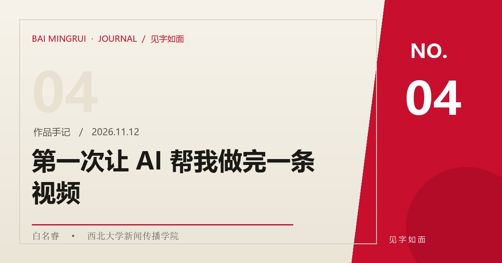
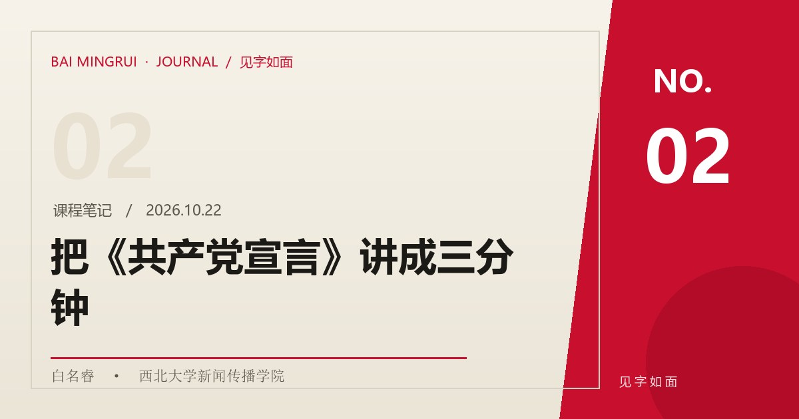

用 Three.js 做一个会转的首页
没有模型、没有人物，只有六个漂浮的几何体、一圈发光轨道和随板块切换的四种颜色。记录一下这个 3D 首页是怎么搭起来的，以及我为什么最后决定不放人像。

BAI MINGRUI'S JOURNAL · 见字如面
我是白名睿，西北大学新闻传播学院 2025 级本科生。这里不放简历，只放文章：一次现场采访、一份改了四遍的分享稿、一条视频的诞生，还有那些做完之后才想明白的事。
没有模型、没有人物，只有六个漂浮的几何体、一圈发光轨道和随板块切换的四种颜色。记录一下这个 3D 首页是怎么搭起来的，以及我为什么最后决定不放人像。



